硬件Hardware
- 包括
- 个人PC
- CC Debugger仿真器
- mini USB线
- 开发板或集成开发套件
软件Software
- IAR
- IAR
- IAR提供有：限制使用时间和限制项目大小两种免费方案；推荐使用后者；有钱的可以任性，花美刀买个无限制的版本；
- IAR不支持QQ邮箱；PS：QQ邮箱现在支持英文邮箱了，快去申请一个foxmail邮箱吧。一个账号两个邮箱哦！
- 注册成功后，会给你发送一个邮件，包括：序列号和下载链接；下载安装并输入序列号即可使用；
- 注意请妥善保存该邮件，不要删除；
- Zigbee协议栈
- 请使用最新版Z-Stack 3.0.2；打开TI官网，搜索"Z-Stack"并下载
- SmartRF Flash Programmer烧写驱动
- 将程序烧写到芯片中；打开TI官网，搜索"smartrf
flash programmer"并下载；
- 注意：SmartRF Flash Programmer 2是针对ARM系列的；
- 其它工具
- 抓包工具：PACKET-SNIFFER，打开TI官网，搜索"packet sniffer"并下载
- 串口驱动：根据项目需求而定；
- 串口监视工具：根据项目需求而定；
- 拓扑显示工具：根据项目需求而定；
- 说明
- TI的提供的资源很多都是免费的，但是要注册才能下载，有。。。用户信息的嫌疑；
第一个项目：点灯
- 基本流程
- 创建工作空间(.eww)->创建项目(.ewp，如基于C的项目)->配置项目->创建其它文件->添加文件到项目->调式->下载/烧写->执行/调试
- 注意：工作空间.eww和工作项目.ewp都需要保存；
- 创建项目
- 1.打开IAR
-
-
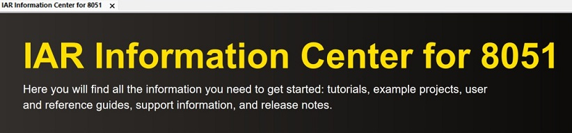
- 2.创建项目：项目project->创建新项目create new project
-
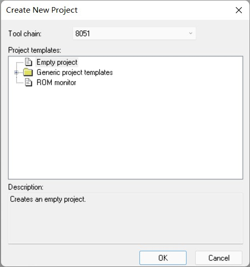
- 或直接创建C项目
-
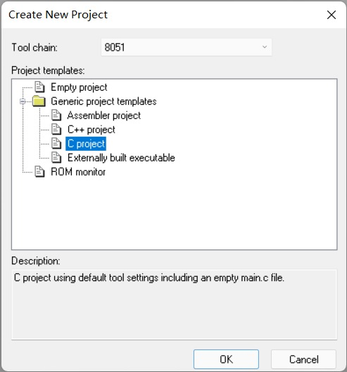
-
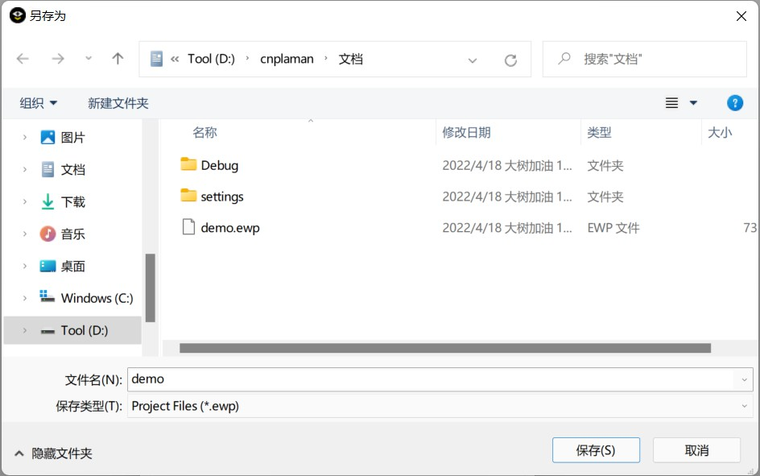
- 3.创建文件，如main.c，并添加到项目；或者编辑完代码再添加到项目；系统会自动识别未添加的文件，并显示出来供你选择；
-
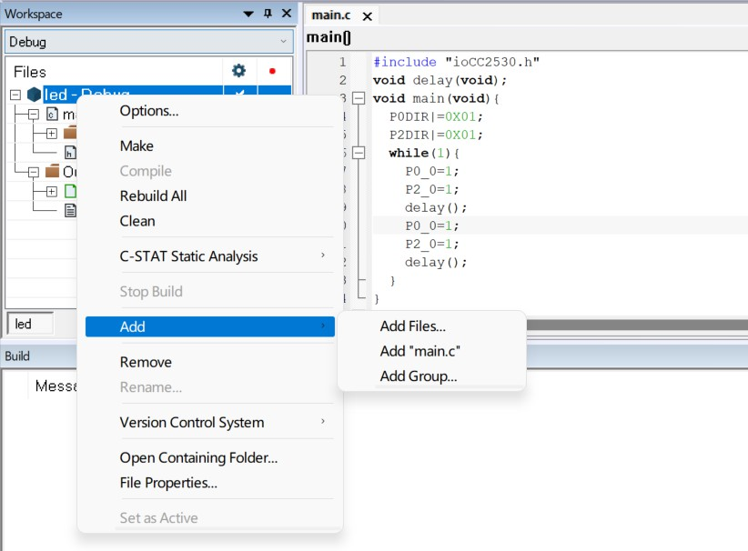
- 配置项目
- IAR支持的芯片很多。编译前，必须配置项目为相应的芯片。基本的配置主要有以下三项，可一次完成配置；
-
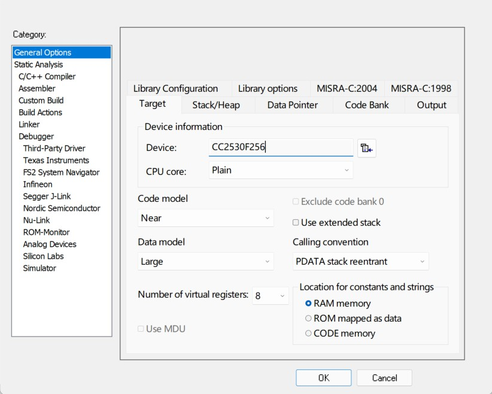
-
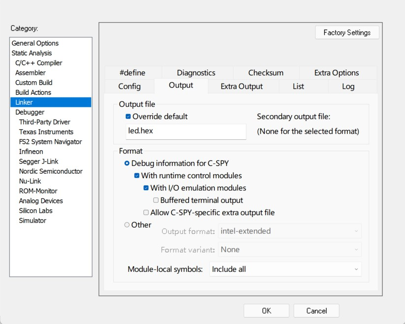
-
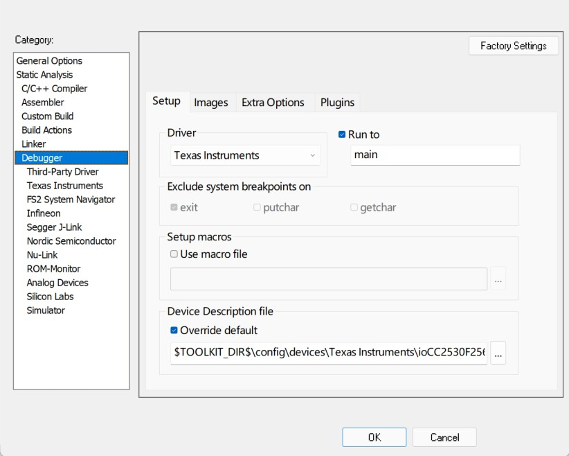
- 编写代码
- 没有自动缩进和代码提示、自动补全真的很无语啊！
-
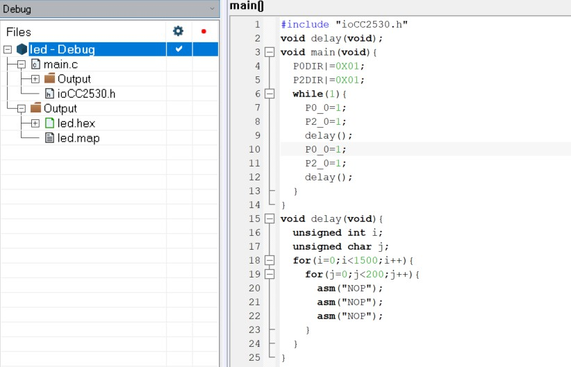
- 调试
- 编译compile：单文件编译；快捷键CTRL+F7；
- 生成make：项目编译；快捷键F7；
- 第一次编译时会提示再次保存；
-
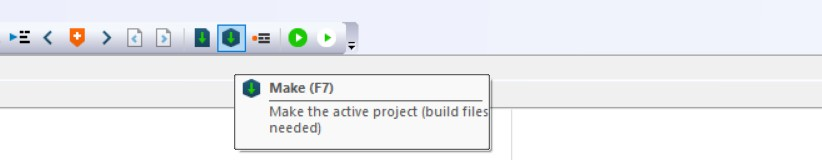
- 尽量完善代码到：0告警、0错误；
-
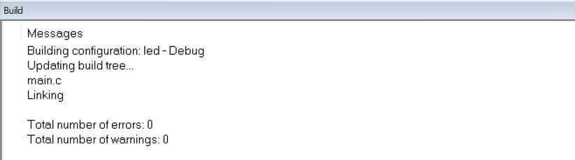
- 下载/烧写
- 使用mini USB线分别连接PC和CC Debugger仿真器，并将CC Debugger仿真器的另外一端和节点板的JTAG相连，按下CC
Debugger仿真器的复位键，绿灯表示连接成功，可以烧写程序；
- 连接时注意排线和插口的方向；
- 每次烧写时，最好按一次复位键，确保是就绪状态-绿灯；
-
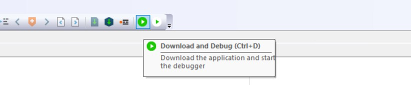
- 执行/调试
- 观察节点板上的LED灯开始间断闪烁；
- 调整源码参数，重新调试，检测实验结果；
基本配置
- 字体
-
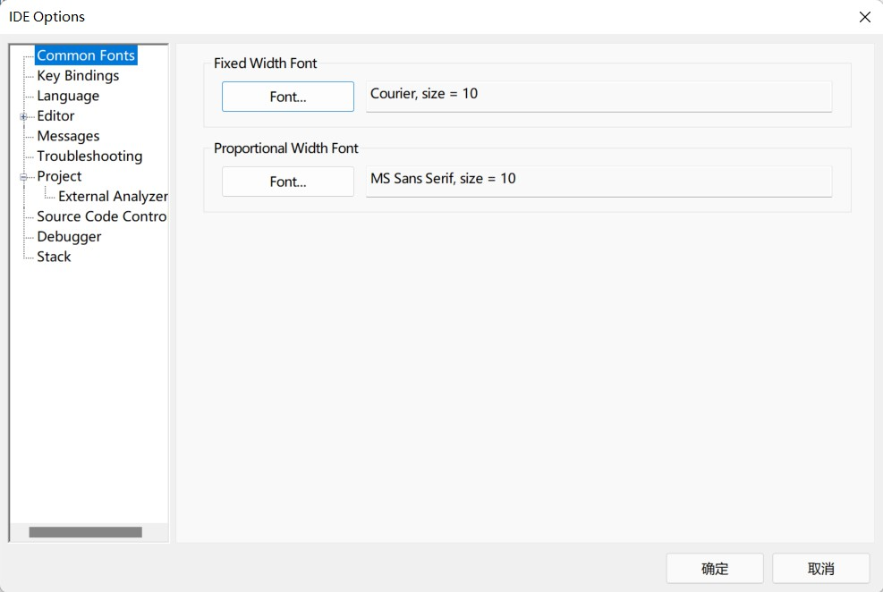
- 行号
-
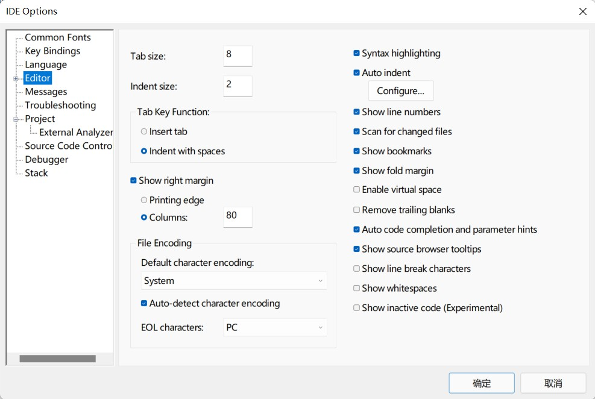
- 格式化代码
- 1. 下载插件Artistic Style或访问获取https://sourceforge.net/projects/astyle/；
- 2. 解压到IAR安装目录；
- 3. 配置工具：根据下图完成配置；
-
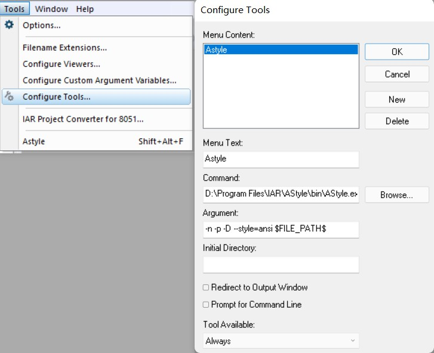
- 创建快捷键
- Tools -> Options，打开对话框，选择keybindings，选择对应的菜单和子菜单项，将光标定位在press shortcut
key对话框中，按你需要的键，最后单击右侧的set按钮确定。注意不要和其它热键冲突。
-
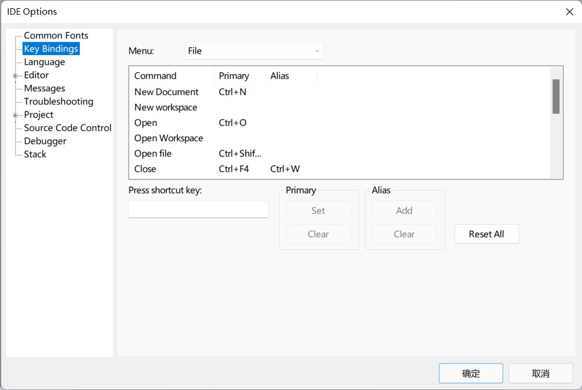
创建模板
- 说明
- 模板是IAR的强大功能；灵活利用模板可以提高开发效率；
- 可以创建注释、函数等模板；
- 创建模板
- 编辑Edit->代码模板Code template->编辑模板Edit Template，打开CodeTemplates.ENU.txt文件，在适当位置添加如下模板；
- 模板以#TEMPLATE开头[大写]，后面是模板的名字和参数；使用>创建多级模板；
- 模板用到的参数以,区分；如果参数带有默认值，以值对的形式呈现；
- 模板实现中，使用数值和参数一一对应；如果需要对齐，不要使用tab，使用空格；
- 同类模板应放在一起；
- 模板使用%c，可以在插入模板后，定义光标的位置；
- 使用模板
- 在源文件中，编辑Edit->代码模板Code template->插入模板Insert Template，选择创建的注释模板；填写对应的内容并确定，注释模板即可添加到源文件中；
- [示例1 注释模板]
- 下面示例声明了一个2级注释代码，共4个参数，其中：第2个和第3个带有默认参数；
- 创建模板
-
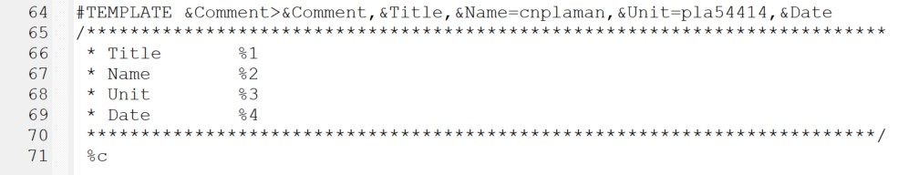
- 使用模板
-
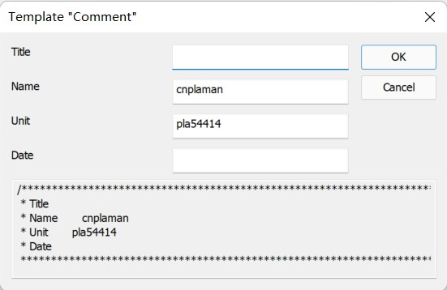
- 插入模板后效果
-
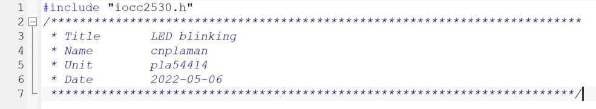
- [示例2 主函数模板]
- 下面示例声明了一个main主函数模板，没有参数，返回为0；
- 该函数模板放在了声明类模板Statement的最上面；插入光标后在mai函数的第一行；
- 创建模板
-
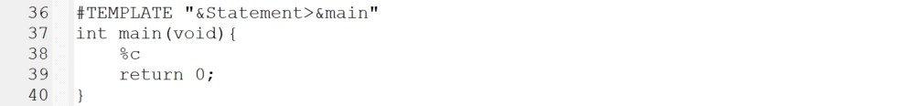
- 使用模板：因为没有函数，直接在源文件中插入
-
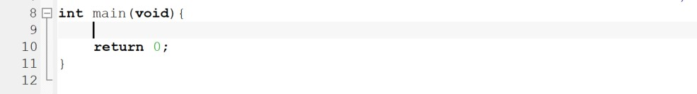